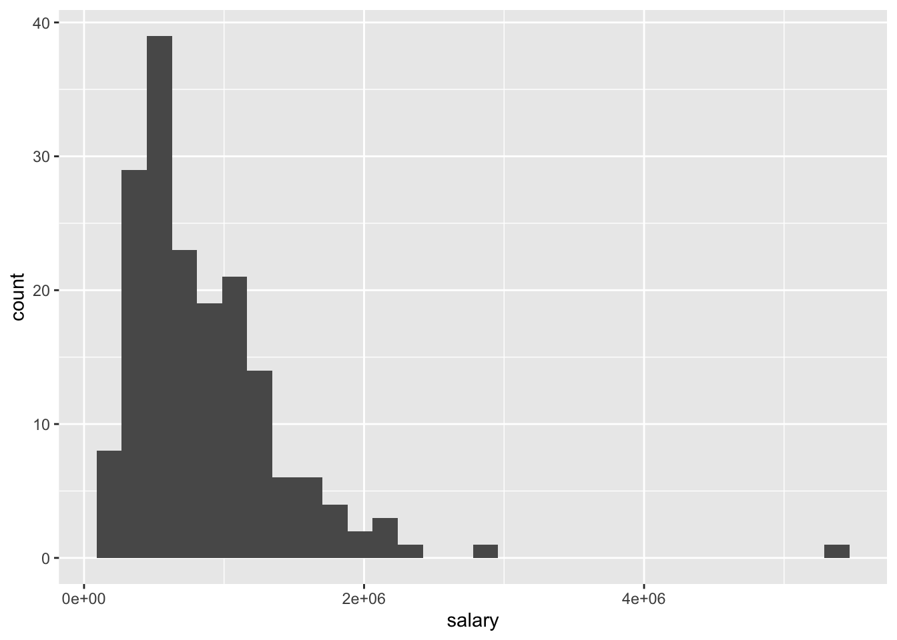
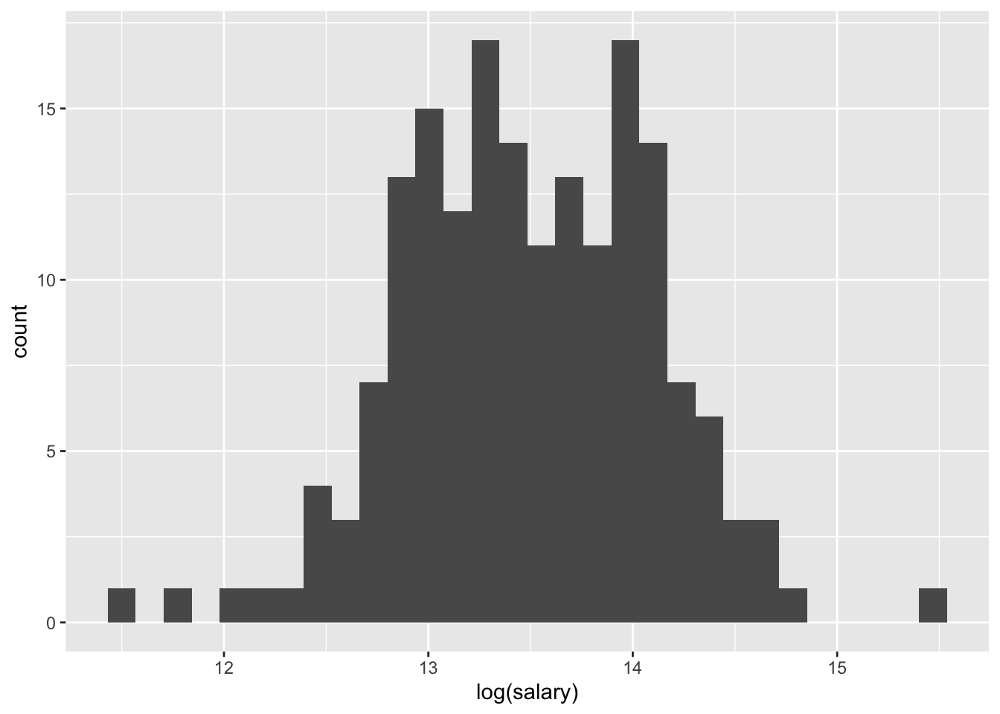
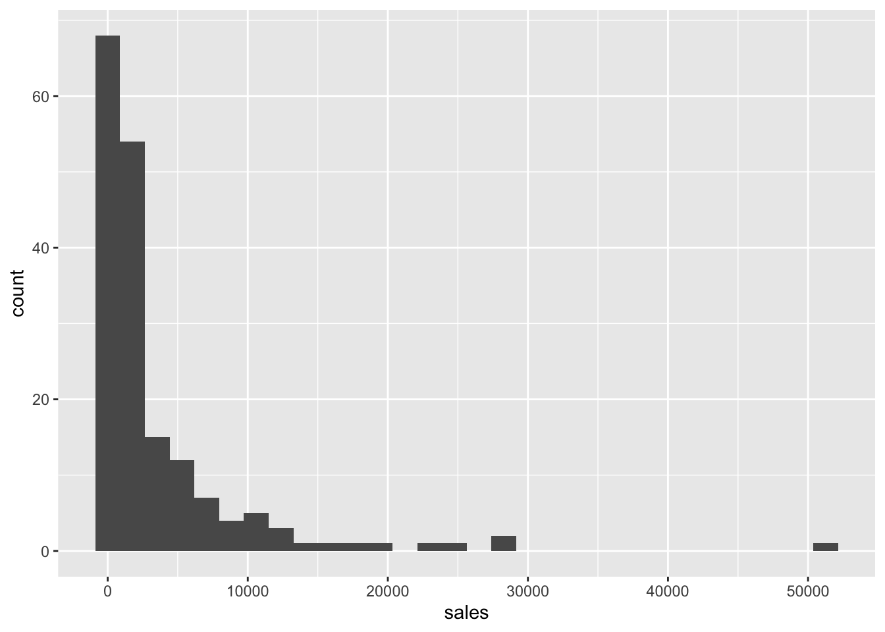
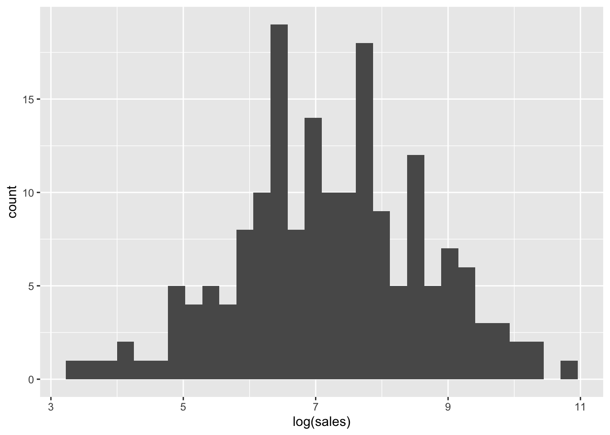
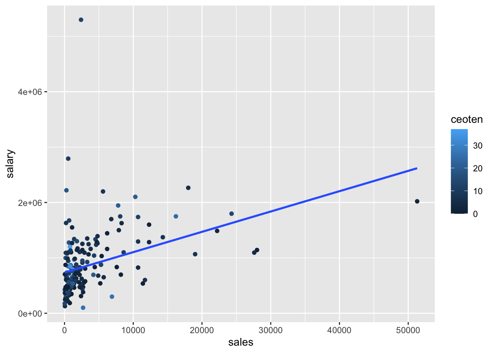
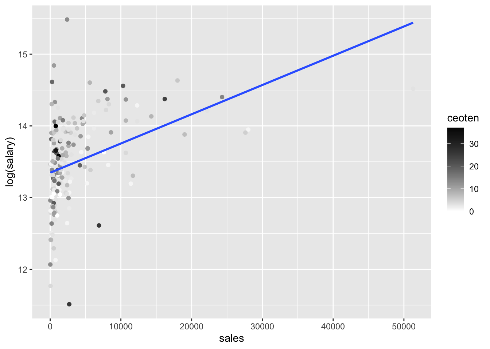
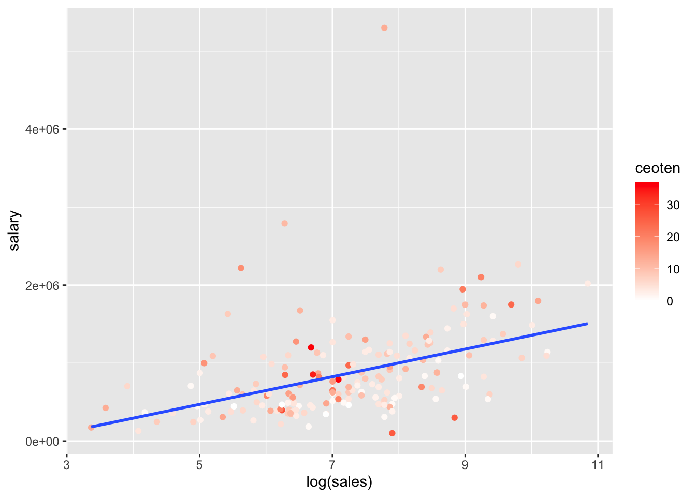
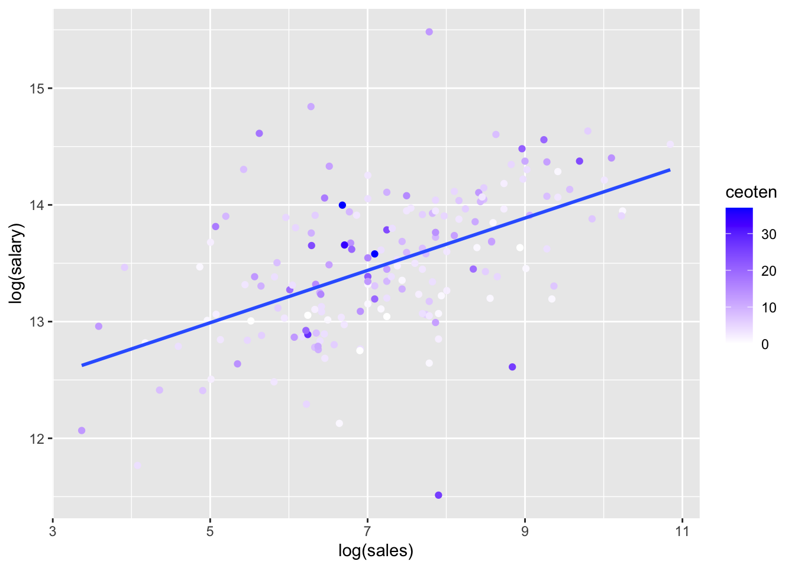

14 Ch 3 - MLR
This chapter walks through a few basics of working with MLR models. The last section at the bottom, Log transformations, asks you to create a few graphs, estimate a few models, and formally interpret a few coefficients.
You’ll need to make sure you have the following packages installed:
library(tidyverse)
library(stargazer)
library(multcomp)
library(pander)
library(car)
library(ggplot2)14.1 Data
The dataset ceo.csv has the following variables:
| Variable | Description |
|---|---|
salary |
1990 compensation in dollars ($) |
age |
age of CEO in years |
comten |
years CEO with company |
ceoten |
years as ceo with company |
sales |
1990 firm sales in $millions |
profits |
1990 profits in $millions |
mktval |
1990 market value in $millions |
Note that the table above has custom formatting applied by adding an HTML class name “variableTable” (via a “div” element that surrounds the table), formatting the table header (th) to be left-aligned and have an orange font so you can easily see what was affected.
14.1.1 Summary Statistics
The stargazer package provides an easy way to display summary statistics. You need the result='asis' code chunk option so that it displays the html table in the knit output file (and you need the type="html" stargazer option to produce the html table). The warning=FALSE and message=FALSE keep it from displaying some of the messages it displays by default.
mydata <- read.csv("https://raw.githubusercontent.com/econ380w21/380data/main/ceosal.csv")
stargazer(mydata, type = "html",summary.stat = c("mean","sd", "min", "p25", "median", "p75", "max"))| Statistic | Mean | St. Dev. | Min | Pctl(25) | Median | Pctl(75) | Max |
| salary | 865,864.400 | 587,589.300 | 100,000 | 471,000 | 707,000 | 1,119,000 | 5,299,000 |
| age | 56.429 | 8.422 | 33 | 52 | 57 | 62 | 86 |
| comten | 22.503 | 12.295 | 2 | 12 | 23 | 33 | 58 |
| ceoten | 7.955 | 7.151 | 0 | 3 | 6 | 11 | 37 |
| sales | 3,529.463 | 6,088.654 | 29 | 561 | 1,400 | 3,500 | 51,300 |
| profits | 207.831 | 404.454 | -463 | 34 | 63 | 208 | 2,700 |
| mktval | 3,600.316 | 6,442.276 | 387 | 644 | 1,200 | 3,500 | 45,400 |
In addition to providing you with an example of how to display a summary statistics table, this section also provides an example of how you can control aspects of how the table displays using HTML/CSS. In bookdown, the horizontal space is already modified for you, but if you use this in a regular RMD file that you knit, there will be no spacing at all between cells (so the numbers bump right up next to each other). To fix this, you can add padding (e.g., padding-left, padding-right). Often you want to right-align summary statistics. To do this, I’ve added an HTML class name “sumstats” to this section by including .sumstats in curly brackets in the section header (the part started with ##). I included CSS styling to align the text right. I also make the font green so that you could easily see what was modified.
Beyond simply formatting a table, this example, and the one above that uses a “div” and class name, are the two main ways you can control the formatting of specific parts of your book (without affecting the entire book).
Now back to econometrics…
14.2 Regression model comparisons
Consider four models:
model1 <- lm(salary~sales+mktval+profits,data=mydata)
model2 <- lm(salary~sales+mktval+profits+age,data=mydata)
model3 <- lm(salary~sales+mktval+profits+ceoten,data=mydata)
model4 <- lm(salary~sales+mktval+profits+ceoten+age,data=mydata)The package you should use for 380 to report the results of multiple models side-by-side is the stargazer package. Each column is a separate model. If a variable does not have a coefficient displayed in a column, that means it was not included as an explanatory variable in that model.
stargazer(model1, model2, model3, model4,
type = "html",
report=('vc*p'),
keep.stat = c("n","rsq","adj.rsq"),
notes = "<em>*p<0.1;**p<0.05;***p<0.01</em>",
notes.append = FALSE)| Dependent variable: | ||||
| salary | ||||
| (1) | (2) | (3) | (4) | |
| sales | 15.984 | 15.369 | 18.233* | 18.061 |
| p = 0.152 | p = 0.169 | p = 0.100 | p = 0.106 | |
| mktval | 23.831 | 23.842 | 21.157 | 21.231 |
| p = 0.137 | p = 0.137 | p = 0.183 | p = 0.183 | |
| profits | 31.703 | 28.100 | 48.636 | 47.528 |
| p = 0.909 | p = 0.920 | p = 0.859 | p = 0.863 | |
| age | 4,528.026 | 823.966 | ||
| p = 0.353 | p = 0.873 | |||
| ceoten | 12,730.860** | 12,390.430** | ||
| p = 0.026 | p = 0.042 | |||
| Constant | 717,062.400*** | 464,424.700* | 613,958.800*** | 570,743.300** |
| p = 0.000 | p = 0.093 | p = 0.000 | p = 0.042 | |
| Observations | 177 | 177 | 177 | 177 |
| R2 | 0.178 | 0.182 | 0.201 | 0.202 |
| Adjusted R2 | 0.163 | 0.163 | 0.183 | 0.178 |
| Note: | *p<0.1;**p<0.05;***p<0.01 | |||
Just like for the summary statistics table, you need the result='asis' code chunk option so that it displays the html table in the knit output file (and you need the type="html" stargazer option to produce the html table), and you want the warning=FALSE and message=FALSE code chunk options to keep it from displaying some of the messages it displays by default.
For displaying regression results for 380, please use the report=('vc*p') stargazer option to display p-values and the keep.stat = c("n","rsq","adj.rsq") stargazer option to display the sample size (it’s important to know the sample size for each model so you can see if it changes, which happens if some variables have missing values), r-squared, and adjusted r-squared.
The final two options (notes and notes.append) fix a bug in stargazer. The table is supposed to display a note that explains the stars (asterisks) used to denote statistical significance (one star means statistically significant at the 10% level, two stars mean statistically significant at the 5% level, and 3 stars mean statistically significant at the 1% level). However, asterisks are also how you make words italic and bold in RMarkdown, and that’s what happens in the table footnote (try removing those options and building to see what I mean). The solution is to use the character code 42 (*) instead. So, just use the options above and it should work correctly.1 This option also highlights why you often want to have easily-accessible examples. You’re probably not going to remember all that to type it yourself, but if you have this chapter in your BP, you can easily search for stargazer, find this example, and copy/paste into your project or wherever you want to report results.
14.3 Adjusted R-Squared
Recall the definition of \(R^2\) from “LN3.6 (R-Squared, Goodness of Fit).pptx” (posted in Moodle): \[ R^2 = \frac{SSM}{SST} = 1 - \frac{SSR}{SST} \]
The denominator measures the total variation in the \(y\) variable: \(SST = (n-1)\text{VAR}(y)\) (where \(\text{VAR}(y)\) is the variance of \(y\)); thus, \(SST\) has nothing to do with the explanatory variables (it’s calculated only using \(y\)). Consequently, adding additional \(x\) variables to the model does not affect \(SST\). Adding an additional \(x\) variable cannot decrease how much of the variation in \(y\) is explained by the model, so \(SSM\) will not decrease. Usually it increases at least a little bit. Thus, adding an additional \(x\) variable cannot decrease \(R^2\), and it usually increases it at least a little bit. This means that \(R^2\) increasing is a not a good justification for adding an additional \(x\) variable to the model.
Adjusted \(R^2\) penalizes you for adding an additional \(x\) variable. Adjusted \(R^2\) only increases if the new variable has a sufficiently significant effect on \(y\). Adjusted \(R^2\) is defined as
\[ \text{Adjusted }\bar{R}^2 = 1 - \frac{\left(\frac{SSR}{n-k-1}\right)}{\left(\frac{SST}{n-1}\right)} \]
Look at the models above. All four models include measures of the company, including sales, market value, and profits. Models 2-4 add variables measuring characteristics of the CEO. Compare models 1 and 2. Adding the CEO’s age increases \(R^2\) (from 0.178 to 0.182) but adjusted \(R^2\) remains essentially the same (it goes down by 0.000625), indicating that adding age does not improve the model (you’ll also note that the p-value for the age coefficient is 0.352, meaning that the effect of the CEO’s age on salary is not statistically significant at any standard level of significance, providing further evidence that including age does not improve the model).
Comparing models 1 and 3, both \(R^2\) and adjusted \(R^2\) increase when adding the CEO’s tenure (from 0.178 to 0.201 for \(R^2\) and from 0.163 to 0.183 for adjusted \(R^2\)). This increase in adjusted \(R^2\) corresponds with statistical significance of the coefficient; the p-value for the ceoten coefficient is 0.0251, meaning that the effect of CEO’s tenure on salary is statistically significant at the 5% level. The increase in adjusted \(R^2\) provides support for including this variable in the model (with the statistically significant coefficient providing additional support).
Comparing models 3 and 4, we again see that adding the CEO’s age does not improve the model; \(R^2\) increases slightly (from 0.201 to 0.202) but adjusted \(R^2\) goes down (from 0.183 to 0.178). The coefficient on age is also not statistically significant at any standard level of significance (the p-value is 0.873,). These results indicate that age should be left out of the model.
14.4 Multicollinearity
Sometimes two variables are both important in determining \(y\), but when both are included in the model, neither appears to have a significant effect. Consider the following four models. Note that the final column is model 3 from above (so I numbered the models 5, 6, 7, and 3).
model5 <- lm(salary~sales+ceoten,data=mydata)
model6 <- lm(salary~sales+ceoten+mktval,data=mydata)
model7 <- lm(salary~sales+ceoten+profits,data=mydata)
model3 <- lm(salary~sales+ceoten+mktval+profits,data=mydata)stargazer(model5, model6, model7, model3,
type = "html",
report=('vc*p'),
keep.stat = c("n","rsq","adj.rsq"),
notes = "<em>*p<0.1;**p<0.05;***p<0.01</em>",
notes.append = FALSE,
model.numbers = FALSE,
column.labels = c("(5)","(6)", "(7)", "(3)"))| Dependent variable: | ||||
| salary | ||||
| (5) | (6) | (7) | (3) | |
| sales | 37.801*** | 19.019* | 19.667* | 18.233* |
| p = 0.00000 | p = 0.061 | p = 0.076 | p = 0.100 | |
| ceoten | 13,925.610** | 12,703.360** | 13,296.830** | 12,730.860** |
| p = 0.016 | p = 0.025 | p = 0.020 | p = 0.026 | |
| mktval | 23.400** | 21.157 | ||
| p = 0.015 | p = 0.183 | |||
| profits | 341.028** | 48.636 | ||
| p = 0.041 | p = 0.859 | |||
| Constant | 621,670.900*** | 613,436.100*** | 619,800.500*** | 613,958.800*** |
| p = 0.000 | p = 0.000 | p = 0.000 | p = 0.000 | |
| Observations | 177 | 177 | 177 | 177 |
| R2 | 0.173 | 0.201 | 0.193 | 0.201 |
| Adjusted R2 | 0.164 | 0.187 | 0.179 | 0.183 |
| Note: | *p<0.1;**p<0.05;***p<0.01 | |||
Following similar logic to our discussion above about using adjusted \(R^2\) and p-values to decide which variables to include in the model, we can make several conclusions about market value (mktval) and profits. Comparing models 5 and 6, adjusted \(R^2\) increases (from 0.164 to 0.187) and the coefficient on mktval is statistically significant at the 5% level (p-value of 0.0146). Thus, market value should be added to the model to join sales and CEO tenure in explaining CEO salary. Similarly, comparing models 5 and 7, adjusted \(R^2\) increases (from 0.164 to 0.179) and the coefficient on profits is statistically significant at the 5% level (p-value of 0.0402), indicating that profits should be added to the model to join sales and CEO tenure in explaining CEO salary.
However, look at what happens when we include both market value (mktval) and profits. Comparing models 7 and 3, adjusted \(R^2\) goes up slightly (from 0.179 to 0.183), but comparing models 6 and 3, adjusted \(R^2\) goes down (from 0.187 to 0.183). And both mktval and profits are not statistically significant at any standard level of significance in model 3 (p-values are 0.1821 and 0.859, respectively).
How can adding mktval improve model 5 and adding profits improve model 5, but adding both doesn’t? Often this happens when there is correlation between explanatory variables. Sometimes this happens when several explanatory variables essentially measure the same concept. If the variables are very similar measures of the same underlying concept, it often makes sense to include only one or the other (sometimes papers will include “robustness checks” that show results are similar if you use alternative measures).
Sometimes, however, variables measure different concepts but are still highly correlated with each other. Correlation between explanatory variables is called multicollinearity. When we do a regression, we’re looking at variation in the explanatory variables and how that explains variation in the outcome. When two explanatory variables tend to move together (i.e., are correlated), it’s hard for OLS to tell which explanatory variable is driving the changes in the outcome. Pretend the index finger on your left hand represents \(y\) and the index finger on your right hand represents \(x_1\). Move your hands up and down somewhat together, as if demonstrating how \(x_1\) affects \(y\). Now also extend your pinky finger on your right hand to represent \(x_4\). Make the same hand movements. If we were watching your hand movements, we wouldn’t be able to tell if it was \(x_1\) or \(x_4\) affecting \(y\) because whenever \(x_1\) goes up, so does \(x_4\) (since both are on your right hand, you can tip your hand one way or the other so the correlation isn’t perfect, but they’re generally going to move pretty closely together).
Formally, we can measure this relationship between explanatory variables with a regression. Here is the regression of profits on market value:
mktvalAndProfits <- lm(profits~mktval,data=mydata)
pander(summary(mktvalAndProfits))| Estimate | Std. Error | t value | Pr(>|t|) | |
|---|---|---|---|---|
| (Intercept) | 0.3038 | 13.85 | 0.02194 | 0.9825 |
| mktval | 0.05764 | 0.001881 | 30.65 | 2.935e-72 |
| Observations | Residual Std. Error | \(R^2\) | Adjusted \(R^2\) |
|---|---|---|---|
| 177 | 160.7 | 0.843 | 0.8421 |
The \(R^2\) is 0.843, meaning that 84.3% of the variation in profits can be explained by variation in market value (in a linear model). Because profits and market value tend to both be low or both be high at the same time, it is hard for OLS to tell to what extent it’s market value affecting salary, and to what extent it’s profits.
14.4.1 Variance Inflation Factor (VIF)
The Variance Inflation Factor (VIF) is a common measure used to gauge how much multicollinearity might be affecting the precision with which we are able to measure a particular coefficient. The VIF is one part of the equation used to calculate the standard error of a coefficient.2
Consider the general regression equation: \[ y_i = \beta_0 + \beta_1 x_{1i} + \beta_2 x_{2i} + \cdots + \beta_k x_{ki} + u_i \]
For variable \(j\), the VIF is \[ \text{VIF}_j = \frac{1}{1-R^2_j} \] where \(R^2_j\) is the \(R^2\) of the regression of \(x_j\) on the other explanatory variables (including an intercept). The variance of \(\hat{\beta}_j\) is \[ \text{VAR}(\hat{\beta}_j)=\frac{\sigma^2}{SST_j}\text{VIF}_j \] where \(\sigma^2\) is a measure of the variance of the unobservables, given the explanatory variables, and \(SST_j\) is the total variation in \(x_j\). This equation makes a lot of intuitive sense. The more variable the unobservable factors that affect \(y\), the noisier (less precise) our estimates of how each explanatory variable affects \(y\); thus, \(\text{VAR}(\hat{\beta}_j)\) is larger. The more variation there is in explanatory variable \(x_j\), the more information we have about how \(x_j\) relates to \(y\), and the more precise the estimate of \(\beta_j\); thus, \(\text{VAR}(\hat{\beta}_j)\) is smaller. However, if a lot of that variation in \(x_j\) can be explained by the other explanatory variables, the harder it is for OLS to tell which variable is affecting \(y\), and thus the less precise the estimate of \(\hat{\beta}_j\); thus, \(\text{VIF}_j\) is higher, and so is \(\text{VAR}(\hat{\beta}_j)\). In other words, to precisely estimate the effect of \(x_j\) on \(y\), we need independent variation in \(x_j\).
Consider two extreme cases. First, if there is no variation in \(x_j\), then \(SST_j=0\) and \(\text{VAR}(\hat{\beta}_j)\) is infinite. This situation is also a violation of MLR.3 that prohibits perfect collinearity (because if \(x_j\) is constant, it is perfectly collinear with the constant). Second, if all of the variation in \(x_j\) is perfectly explained by the other explanatory variables, then \(R^2_j=1\) and \(\text{VIF}_j\) is infinite. This means \(\text{VAR}(\hat{\beta}_j)\) is also infinite. This situation is also a violation of MLR.3; \(R^2_j=1\) means there is a perfect linear relationship between \(x_j\) and the other explanatory variables, exactly what is prohibited by MLR.3.
At the other end if the spectrum is the best case for precisely estimating a coefficient \(\hat{\beta}_j\), which is when there is lots of variation in \(x_j\) (i.e., \(SST_j\) is large), and that variation is completely unrelated to variation in the other explanatory variables (i.e., \(R^2_j=0\) so \(\text{VIF}_j=1\)).
The only other term in \(\text{VAR}(\hat{\beta}_j)\) we haven’t discussed is \(\sigma^2\), the variation in the unobservables given the explanatory variables. The less unobservable factors are affecting \(y\), the more precisely we can estimate how our explanatory variables affect \(y\). In the extreme case, there are no unobservables affecting \(y\). Thus, \(\sigma^2=0\), meaning \(\text{VAR}(\hat{\beta}_j)=0\). In this situation, we can exactly estimate the effect of each explanatory variable on \(y\); hence, \(\text{VAR}(\hat{\beta}_j)=0\).
Let’s examine the VIF for our specific example. In the example above, we focused on just two variables, profits and market value, but the regression in question (model 3) also includes sales and CEO tenure. Thus, we want to know how much of the variation in market value can be explained by variation in the other explanatory variables. We find this via this regression:
modelProfits <- lm(profits~sales+ceoten+mktval,data=mydata)
pander(summary(modelProfits))| Estimate | Std. Error | t value | Pr(>|t|) | |
|---|---|---|---|---|
| (Intercept) | -10.75 | 18.19 | -0.5907 | 0.5555 |
| sales | 0.01615 | 0.002805 | 5.76 | 3.775e-08 |
| ceoten | -0.5654 | 1.567 | -0.3608 | 0.7187 |
| mktval | 0.04612 | 0.002645 | 17.44 | 5.822e-40 |
| Observations | Residual Std. Error | \(R^2\) | Adjusted \(R^2\) |
|---|---|---|---|
| 177 | 147.7 | 0.8689 | 0.8666 |
The \(R^2\) is 0.869, meaning that 86.9% of the variation in profits can be explained by variation in market value, sales, and CEO tenure (the other explanatory variables. This \(R^2\) value, denoted \(R^2_{profits}\), is the value used to calculate the VIF for \(\hat{\beta}_{profits}\): \[ \text{VIF}_{profits} = \frac{1}{1-R^2_{profits}} = \frac{1}{1-0.8689} = 7.63 \] This is a somewhat high VIF, but not so high that we would necessarily expect a problem. Sometimes a VIF of 10 is used as a rule of thumb for a cutoff for how much multicollinearity is too much, but using 10 as a cutoff is arbitrary (so don’t rely on this too much). The following table gives you an idea of how \(R^2_j\) relates to \(\text{VIF}_j\).
| \(R^2_j\) | \(\text{VIF}_j\) |
|---|---|
| 0 | 1 |
| 0.1 | 1.111 |
| 0.2 | 1.25 |
| 0.3 | 1.429 |
| 0.4 | 1.667 |
| 0.5 | 2 |
| 0.6 | 2.5 |
| 0.7 | 3.333 |
| 0.8 | 5 |
| 0.9 | 10 |
| 0.99 | 100 |
| 0.999 | 1000 |
The VIF value of 10 corresponds with \(R^2_j=0.9\). For \(R^2_j\) above 0.9, the VIF increases quite steeply.
14.4.2 Joint hypotheses test
So should we only include one or the other? Not necessarily. Both market value and profits affect salary. If we leave one out, we’ll have omitted variable bias. Look at how the coefficient on profits changes between models 7 and 3: it falls by 292 (from 341 down to 48.63609). However, due to the multicollinearity in model 3, we get very imprecise estimates of mktval and profits. Multicollinearity often makes it difficult to estimate effects precisely, but if we don’t include both variables, we introduce omitted variable bias. A larger sample size might help,3 but that’s obviously not something we can change in most situations (since we’re usually using data other people have already collected).
A common approach is to include several models for comparison, both with and without the variables (like the table above with models 5, 6, 7, and 3). Then, do a formal test of whether the two variables are jointly significant in determining \(y\). Formally, this is a hypothesis test of the joint null hypothesis that \(\beta_{mktval}=0\) and \(\beta_{profits}=0\). To perform this test, we can use the linearHypothesis function from the car package:
jointTest <- linearHypothesis(model3, c("mktval=0", "profits=0"))
jointTest## Linear hypothesis test
##
## Hypothesis:
## mktval = 0
## profits = 0
##
## Model 1: restricted model
## Model 2: salary ~ sales + ceoten + mktval + profits
##
## Res.Df RSS Df Sum of Sq F Pr(>F)
## 1 174 5.0244e+13
## 2 172 4.8526e+13 2 1.7174e+12 3.0436 0.05024 .
## ---
## Signif. codes: 0 '***' 0.001 '**' 0.01 '*' 0.05 '.' 0.1 ' ' 1The p-value is 0.0502. The interpretation is the same as for other hypothesis tests. Here, we reject the null hypothesis at the 10% level. This provides evidence that market value and profits together are important in determining salary.
You can see section 4-5a in Wooldridge 6e for more on joint hypothesis tests. This test can be beneficial when you have a situation where you have reason to believe two (or more) variables are important in determining \(y\), but each is individually insignificant. Take care not to abuse this test by testing a highly insignificant variable with a highly significant variable. Any joint hypothesis test that includes a variable that is individually highly significant (i.e., that has a p-value under 0.01) will usually be jointly significant as well; so trying to use this test as evidence that the insignificant variable is actually jointly significant is essentially cheating (i.e., mis-representing what the test is telling us).
14.5 Testing linear combinations of parameters
It’s common for people to look at regression results and make comparisons between coefficients. For example, looking at models 6 and 3 above, the coefficient on market value is larger than the coefficient on sales. Does this mean market value is more important that sales in terms of its effect on salary? To see how we answer this question, let’s consider model 3 for the rest of this section, reprinted here for convenience:
pander(summary(model3))| Estimate | Std. Error | t value | Pr(>|t|) | |
|---|---|---|---|---|
| (Intercept) | 613959 | 65486 | 9.375 | 3.95e-17 |
| sales | 18.23 | 11.01 | 1.656 | 0.09949 |
| ceoten | 12731 | 5636 | 2.259 | 0.02515 |
| mktval | 21.16 | 15.79 | 1.34 | 0.1821 |
| profits | 48.64 | 273.4 | 0.1779 | 0.859 |
| Observations | Residual Std. Error | \(R^2\) | Adjusted \(R^2\) |
|---|---|---|---|
| 177 | 531159 | 0.2014 | 0.1828 |
There’s two main things to keep in mind when attempting to compare coefficients in the same model. First, pay attention to the units. In this case, both market value and sales are measured in millions of dollars, so the coefficients are both in terms of a $1 million increase. Thus, the comparison is between a $1 million increase in market value versus a $1 million increase in sales, which increase CEO salary by $18.23 and $21.16, respectively (holding constant the other explanatory variables). This is an apples to apples comparison that is easy to understand. Be extra careful that the scale is the same. Here, the scale is the same because both are in millions, but watch out for when one variable is measured in millions and another is measured in thousands, etc. If the variables have different units, be extra clear about what you are comparing. For example, if you were trying to compare sales to CEO tenure, you’d be comparing the effects on salary of an additional $1 million in sales and 1 additional year of tenure as CEO.
The other thing to keep in mind when comparing coefficients is statistical significance. A coefficient could be larger by chance, so we need to run a hypothesis test to see if we have evidence to believe the difference is not just occurring randomly. We need to do a hypothesis test on the null hypothesis that \(\left(\hat{\beta}_{profit}-\hat{\beta}_{sales}\right)=0\) versus the alternative that it does not. Formally, our test statistic is: \[ t=\frac{\left(\hat{\beta}_{profit}-\hat{\beta}_{sales}\right)-0}{\text{SE}\left(\hat{\beta}_{profit}-\hat{\beta}_{sales}\right)} \]
Thus, we need to calculate not just the difference in coefficients, \(\left(\hat{\beta}_{profit}-\hat{\beta}_{sales}\right)\), but also the standard error of the difference, \(\text{SE}\left(\hat{\beta}_{profit}-\hat{\beta}_{sales}\right)\). To calculate the standard error of the difference, we need to know not just the standard error of \(\hat{\beta}_{profit}\) and \(\hat{\beta}_{sales}\), but also the correlation between the two estimates (if both coefficients tend to be big together and small together, the coefficients tend to stay closer together, making the difference smaller, but if they are negatively correlated, one tends to be bigger when the other one is smaller and the difference tends to be larger). Thus, calculating \(\text{SE}\left(\hat{\beta}_{profit}-\hat{\beta}_{sales}\right)\) requires the full variance-covariance matrix. Instead, we’ll use the glht function from the multcomp package to perform the test for us:
testOfDif <- glht(model3, linfct = c("profits - sales = 0"))
summary(testOfDif)##
## Simultaneous Tests for General Linear Hypotheses
##
## Fit: lm(formula = salary ~ sales + ceoten + mktval + profits, data = mydata)
##
## Linear Hypotheses:
## Estimate Std. Error t value Pr(>|t|)
## profits - sales == 0 30.4 278.0 0.109 0.913
## (Adjusted p values reported -- single-step method)We can interpret the p-value just like the p-value for a hypothesis test of a single coefficient. The p-value is 0.9130323, so we fail to reject the null hypothesis that the two coefficients are the same at all standard levels of significance. In other words, we can’t reject that the difference is due to chance. We could also form a confidence interval. Here’s the 90% confidence interval for the difference in coefficients:
confint(testOfDif,level = 0.9)##
## Simultaneous Confidence Intervals
##
## Fit: lm(formula = salary ~ sales + ceoten + mktval + profits, data = mydata)
##
## Quantile = 1.6538
## 90% family-wise confidence level
##
##
## Linear Hypotheses:
## Estimate lwr upr
## profits - sales == 0 30.4026 -429.2872 490.0925This 90% confidence interval contains 0; thus, we fail to reject the null hypothesis that the difference is 0 at all standard levels of significance.
So you can see what it looks like when we reach the opposite conclusion, here’s the same test for the difference between the coefficient on ceoten and the coefficient on sales:
testOfDif2 <- glht(model3, linfct = c("ceoten - sales = 0"))
summary(testOfDif2)##
## Simultaneous Tests for General Linear Hypotheses
##
## Fit: lm(formula = salary ~ sales + ceoten + mktval + profits, data = mydata)
##
## Linear Hypotheses:
## Estimate Std. Error t value Pr(>|t|)
## ceoten - sales == 0 12713 5635 2.256 0.0253 *
## ---
## Signif. codes: 0 '***' 0.001 '**' 0.01 '*' 0.05 '.' 0.1 ' ' 1
## (Adjusted p values reported -- single-step method)confint(testOfDif2)##
## Simultaneous Confidence Intervals
##
## Fit: lm(formula = salary ~ sales + ceoten + mktval + profits, data = mydata)
##
## Quantile = 1.9739
## 95% family-wise confidence level
##
##
## Linear Hypotheses:
## Estimate lwr upr
## ceoten - sales == 0 12712.6292 1590.0204 23835.2380The p-value is 0.0253289, so we reject the null hypothesis that the coefficients are the same at the 5% level. In other words, we have evidence (at the 5% level) supporting the claim that the effect on CEO salary of an additional year of CEO tenure is larger than the effect of an additional $1 million in sales, holding constant market value and profits.
14.6 A note on presentation
If you include formal hypothesis tests like those just discussed in the Joint hypotheses test and Testing linear combinations of parameters sections in a paper, you will typically not include the complete test output. Instead, you’ll just say what the test is, report the p-value, and explain the conclusion of the test. The detailed output of the test is included here as part of the BP because it is useful to see all the output as a reference later.
14.7 Log transformations
This section has several things you need to do (and after you complete everything you need to do in this section, you can submit this chapter of your BP).
This data provides a good example of why visualizing your data can be helpful. By visualizing the data using histograms and scatter plots, it is easy to see how skewed the data is and how log transformations can help center it. You will focus on two variables, sales and salary. You will first make histograms and then make scatter plots showing the relationship between these two variables.
14.7.1 Histograms
Make four histograms:
salarylog(salary)saleslog(sales)
You can format them however you’d like, but make sure they are clearly labeled.
salary
salary_histogram <- ggplot(mydata, aes(salary)) + geom_histogram()
salary_histogram## `stat_bin()` using `bins = 30`. Pick better value with `binwidth`.
log(salary)
log_salary_histogram <- ggplot(mydata, aes(log(salary))) + geom_histogram()
log_salary_histogram## `stat_bin()` using `bins = 30`. Pick better value with `binwidth`.
sales
sales_histogram <- ggplot(mydata, aes(sales)) + geom_histogram()
sales_histogram## `stat_bin()` using `bins = 30`. Pick better value with `binwidth`.
log(sales)
log_sales_histogram <- ggplot(mydata, aes(log(sales))) + geom_histogram()
log_sales_histogram## `stat_bin()` using `bins = 30`. Pick better value with `binwidth`.
14.7.2 Scatter plots
You can also see how log transformations spread out the data by looking at scatter plots of salary or log(salary) (y) versus sales or log(sales) corresponding with the four different combinations. Specifically, create four scatter plots:
salary(y) vs.sales(x)log(salary)(y) vs.sales(x)salary(y) vs.log(sales)(x)log(salary)(y) vs.log(sales)(x)
Also add the following to each of the four plots:
A best fit (geom_smooth) “lm” line.
Just to get a bit more experience with data visualization, color the points by
ceotenusing whatever scale_color_gradient (or scale_color_gradientn) you’d like.
salary(y) vs.sales(x)
salary_sales <- ggplot(mydata, aes(sales, salary, color = ceoten)) + geom_point() + geom_smooth(method = "lm", se=FALSE)
salary_sales## `geom_smooth()` using formula 'y ~ x'
log(salary)(y) vs.sales(x)
log_salary_sales <- ggplot(mydata, aes(sales, log(salary), color = ceoten)) + geom_point() + geom_smooth(method = "lm", se=FALSE) + scale_color_gradient2(high = "black")
log_salary_sales## `geom_smooth()` using formula 'y ~ x'
salary(y) vs.log(sales)(x)
salary_log_sales <- ggplot(mydata, aes(log(sales), salary, color = ceoten)) + geom_point() + geom_smooth(method = "lm", se=FALSE) + scale_color_gradient2(high = "red")
salary_log_sales## `geom_smooth()` using formula 'y ~ x'
log(salary)(y) vs.log(sales)(x)
salary_log_sales <- ggplot(mydata, aes(log(sales), log(salary), color = ceoten)) + geom_point() + geom_smooth(method = "lm", se=FALSE) + scale_color_gradient2(high = "blue")
salary_log_sales## `geom_smooth()` using formula 'y ~ x'
14.7.3 Regression models with levels and logs
To make sure you know how to estimate models and display the results using stargazer, you should estimate the following 4 models and display the results.
model 3 (the same one discussed above…either version is fine)
model 3, but with
log(salary)instead ofsalarymodel 3, but with
log(sales)instead ofsalesmodel 3, but with
log(salary)instead ofsalaryandlog(sales)instead ofsales
Display all four models in the same stargazer table. And yes, this just requires you to copy/paste what you can find above in this file, but part of the point is to make sure you know how to use the above examples and modify them as needed.
Finally, to demonstrate that you understand how to formally interpret regression coefficients, you will type formal interpretations of coefficients. To make sure you understand what is required of you when formally interpreting regression coefficients for Econ 380, you should use “LN3.3 (MLR Interpretations).pptx”, “Rules for Interpreting Regression Results.pdf”, “Interpretations Rubric (all 4 level log cases).pdf”, and the example PDFs posted in Moodle.
The interpretations you type must include formal interpretation of coefficients that include the following combinations of level/log:
One coefficient where \(y\) is a level and \(x\) is a level
One coefficient where \(y\) is a log and \(x\) is a level
One coefficient where \(y\) is a level and \(x\) is a log
One coefficient where \(y\) is a log and \(x\) is a log
Your interpretations must also include:
One coefficient that is statistically significant at the 1% level
One coefficient that is statistically significant at the 5% level
One coefficient that is statistically significant at the 10% level
One coefficient that is not statistically significant at any standard level of significance
Note that you can combine these where possible (i.e., one interpretation can be both a log y / level x and a particular level of significance) so you don’t need to type out 8 separate interpretations. I don’t believe you can do it with only 4 interpretations, but I believe you can do it with 5.
Please say which model you’re looking at for each interpretation.
14.7.3.1 Regression Models
model 3 (the same one discussed above…either version is fine)
model 3, but with
log(salary)instead ofsalarymodel 3, but with
log(sales)instead ofsalesmodel 3, but with
log(salary)instead ofsalaryandlog(sales)instead ofsales
model3 <- lm(salary~sales+mktval+profits+ceoten,data=mydata)
model3_logsalary <- lm(log(salary)~sales+mktval+profits+ceoten,data=mydata)
model3_logsales <- lm(salary~log(sales)+mktval+profits+ceoten,data=mydata)
model3_logsalarylogsales <- lm(log(salary)~log(sales)+mktval+profits+ceoten,data=mydata)stargazer(model3, model3_logsalary, model3_logsales, model3_logsalarylogsales,
type = "html",
report=('vc*p'),
keep.stat = c("n","rsq","adj.rsq"),
notes = "<em>*p<0.1;**p<0.05;***p<0.01</em>",
notes.append = FALSE,
model.numbers = FALSE,
column.labels = c("level-level","log-level", "level-log", "log-log"))| Dependent variable: | ||||
| salary | log(salary) | salary | log(salary) | |
| level-level | log-level | level-log | log-log | |
| sales | 18.233* | 0.00003** | ||
| p = 0.100 | p = 0.022 | |||
| log(sales) | 124,542.800*** | 0.193*** | ||
| p = 0.0004 | p = 0.00000 | |||
| mktval | 21.157 | 0.00002 | 19.715 | 0.00002 |
| p = 0.183 | p = 0.276 | p = 0.200 | p = 0.314 | |
| profits | 48.636 | 0.00002 | 21.408 | -0.00004 |
| p = 0.859 | p = 0.935 | p = 0.932 | p = 0.873 | |
| ceoten | 12,730.860** | 0.011* | 12,594.850** | 0.011** |
| p = 0.026 | p = 0.056 | p = 0.023 | p = 0.042 | |
| Constant | 613,958.800*** | 13.240*** | -210,327.500 | 11.957*** |
| p = 0.000 | p = 0.000 | p = 0.385 | p = 0.000 | |
| Observations | 177 | 177 | 177 | 177 |
| R2 | 0.201 | 0.206 | 0.247 | 0.312 |
| Adjusted R2 | 0.183 | 0.187 | 0.229 | 0.296 |
| Note: | *p<0.1;**p<0.05;***p<0.01 | |||
14.7.3.2 Interpretations
- One coefficient where \(y\) is a level and \(x\) is a level & One coefficient that is statistically significant at the 5% level
From model3: Holding the company’s sales, the company’s market value, and the company’s profits constant, if the CEO’s tenure as CEO at the company increases by 1 year, the CEO’s salary is predicted to increase by $12,730.86, on
average. This is statistically significant at the 5% level.
- One coefficient where \(y\) is a log and \(x\) is a level & One coefficient that is statistically significant at the 10% level
From model3_logsalary: Holding the company’s sales, the company’s market value, and the company’s profits constant, if the CEO’s tenure as CEO at the company increases by 1 year, the CEO’s salary is predicted to increase by 1.1%, on
average. This is statistically significant at the 10% level.
- One coefficient where \(y\) is a level and \(x\) is a log & One coefficient that is statistically significant at the 1% level
From model3_logsales: Holding the company’s market value, the company’s profits, and the CEO’s tenure constant, if the company’s sales increases by 1%, the CEO’s salary is predicted to increase by $1245.428, on
average. This is statistically significant at the 1% level.
- One coefficient where \(y\) is a log and \(x\) is a log
From model3_logsalarylogsales: Holding the company’s market value, the company’s profits, and the CEO’s tenure constant, if the company’s sales increases by 1%, the CEO’s salary is predicted to increase by 0.193%, on
average. This is statistically significant at the 1% level.
- One coefficient that is not statistically significant at any standard level of significance
From model3_logsalarylogsales: Holding the company’s sales, the company’s profits, and the CEO’s tenure constant, if the company’s market value increases by 1%, the CEO’s salary is predicted to increase by 0.00002%, on
average. This is not statistically significant at any standard level.
Credit to this Stack Exchange answer for this fix.↩︎
See Wooldridge section 3.4 for a full discussion of the variance of OLS coefficients, and section 3.4a for a discussion of multicollinearity, including the VIF. For these explanations I am assuming homoskedasticity, but the same concepts and intuition apply when there is heteroskedasticity.↩︎
In fact, the \(SST_j\) in the denominator of \(\text{VAR}(j)\) is equivalent to \((n-1)\text{VAR}(x_j)\), so you can re-write the equation for \(\text{VAR}(\hat{\beta}_j)\) with \((n-1)\) in the denominator; hence, larger \(n\) leads to lower \(\text{VAR}(\hat{\beta}_j)\).↩︎